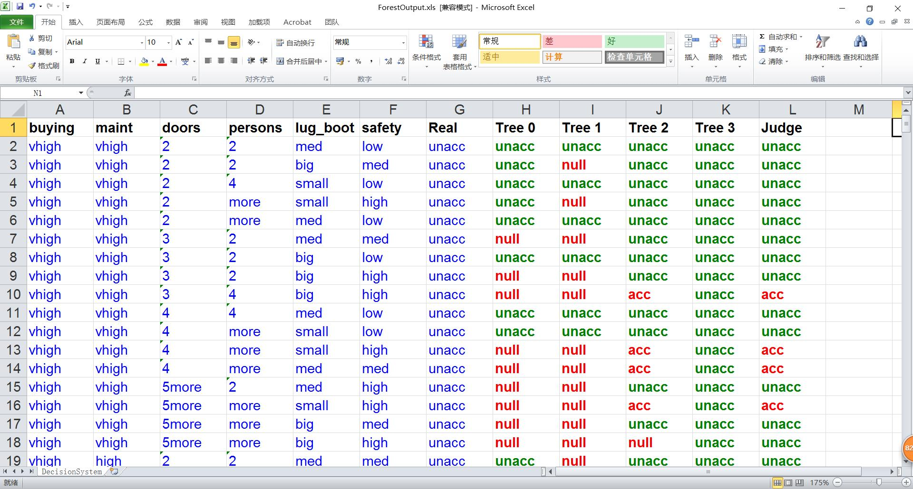

Step 1： |
需要上传一个测试用数据集，并点击“确认上传”。该数据集将用于通过预测分类，而分类模型则是之前步骤中训练生成的随机森林模型进行。 |
|
Step 2： |
通过第一步成功上传后，网页将显示预测分类结果的混淆矩阵。 |
|
Step 3： |
由于网页显示信息有限，因此测试集的详细预测结果，可以通过导航栏中的“文件管理”选项中的“分类结果”页面对文件进行下载。在该页面中，会显示一个excel图标模样的表格选项，点击后，即可进行下载。如下图，就是该文件下载后显示的内容。 |
|
|  | ||